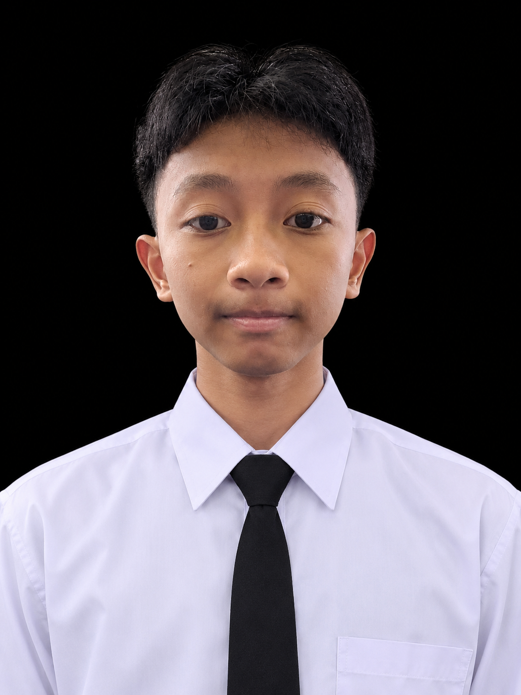

2026 – Sekarang
SMK Krian 1 Sidoarjo
Jurusan Rekayasa Perangkat Lunak (RPL)
Halo, saya
Halo, saya Akmal Evano Wisnu Putra. Saat ini saya fokus belajar pemrograman dan pembuatan website di jurusan RPL. Saya akan terus belajar untuk meningkatkan skills saya dan berguna buat masyarakat.

Saya Vano, pelajar jurusan Rekayasa Perangkat Lunak di SMK Krian 1 Sidoarjo yang mulai tertarik dengan pemrograman gara-gara sering menonton film bertema komputer. Meskipun masih di tahap pemula, saya sangat antusias mempelajari bahasa pemrograman dari nol.
Membangun website portofolio ini menjadi langkah awal yang membanggakan bagi saya. Selain menyukai dunia digital dan bermain game, saya juga aktif berolahraga lewat sepak bola. Ke depannya, saya ingin terus mengasah kemampuan agar bisa menjadi software engineer yang handal.
Perjalanan belajar saya, dari yang terbaru.
Jurusan Rekayasa Perangkat Lunak (RPL)
Sekolah Menengah Pertama
Sekolah Dasar
Tiga bidang yang sedang saya dalami saat ini.
Belajar logika dasar, struktur data, dan membuat program sederhana.
Mempelajari dasar pemrograman berorientasi objek (OOP).
Membangun halaman web responsif dengan HTML, CSS, dan JavaScript.